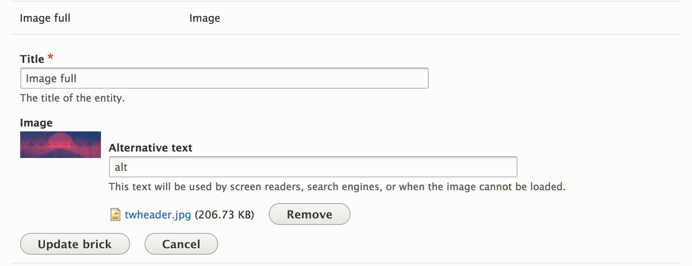
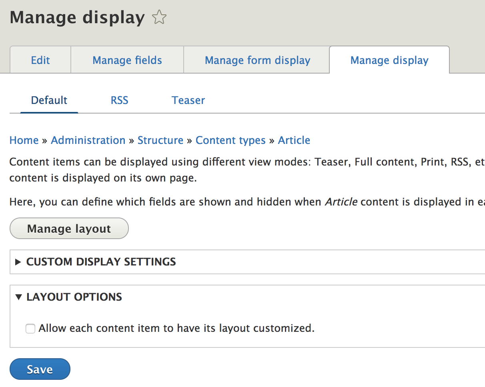
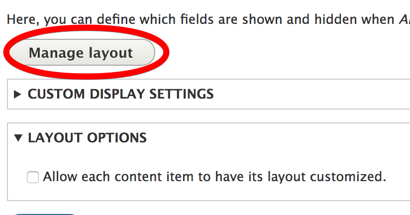
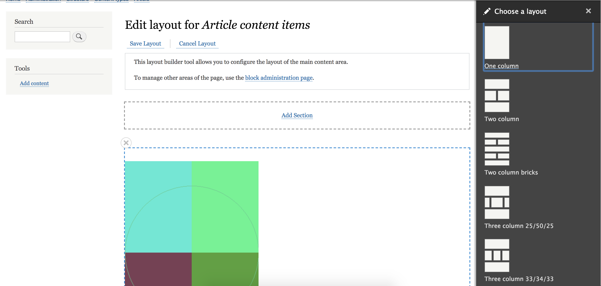
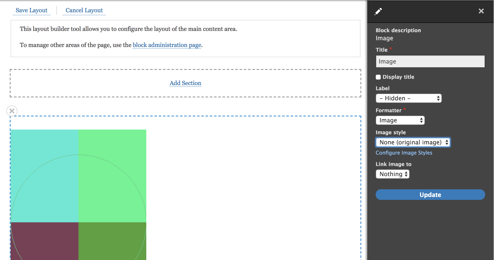
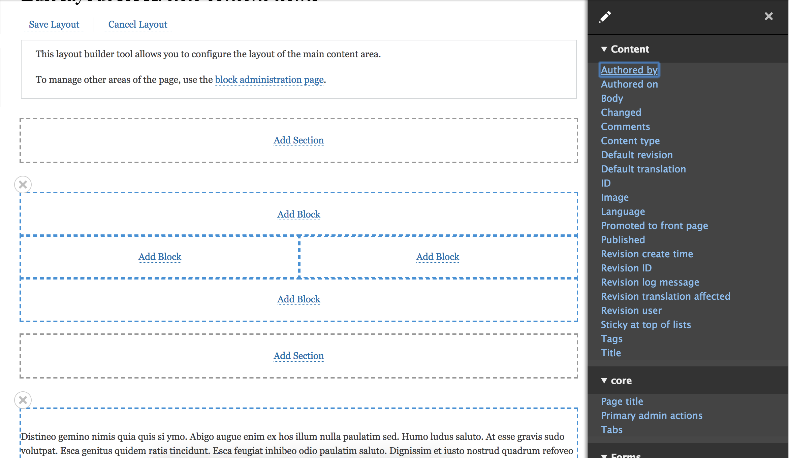
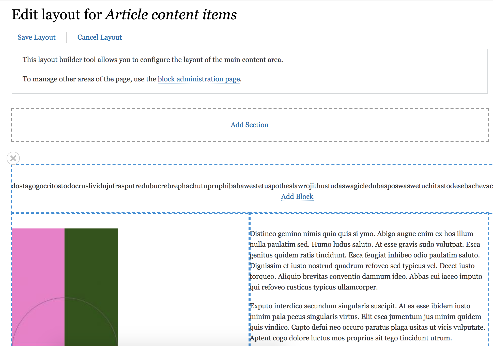
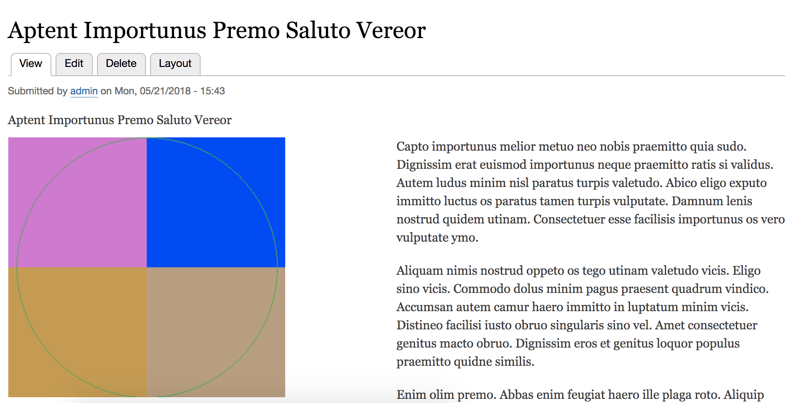
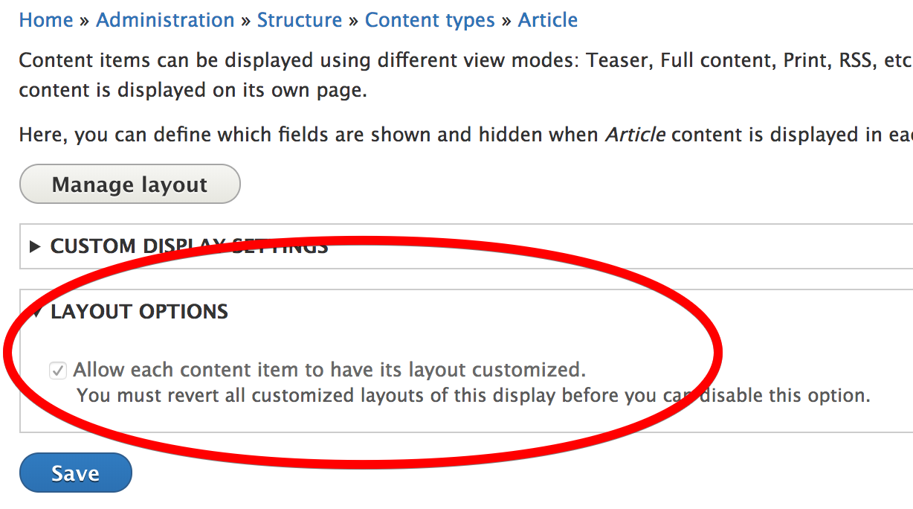
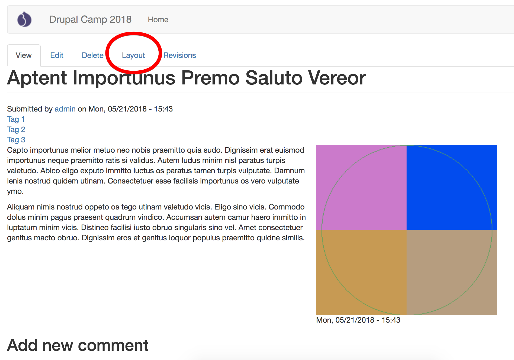

Una vez creado el paragraph, podemos añadirlo a:
Elige bien el naming de los componentes, afectan a la estructura.
En el theme, el componente se debe ver reflejado como tal.
Debe tener sus estilos en su propio archivo scss y ser cargado cuando aparezca el componente
Si os gusta Bootstrap, también podéis complementarlo con Bootstrap kit
En la edición de contenido lo veríamos así...
Podemos reutilizar bricks usados en otras páginas, para así evitar duplicados.
Se debe ir con cuidado si se actualiza un Brick, ya que afectará a nivel general.
Es importante utilizar nombres (títulos) concisos e identificables o se hará el caos.
Cambia la presentación de los campos:
Podemos modificar el layout para cada sección y añadir nuevas secciones
 Además de poder modificar el formato de los campos.
Aplicamos un layout y en cada bloque un campo
Por ejemplo, dos columnas con un top y un bottom:
Al entrar a cualquier artículo ahora se vería con ese layout
Una pequñea demo de como funcionan los layouts...
Podemos también aplicar un layout específico para un nodo concreto
 